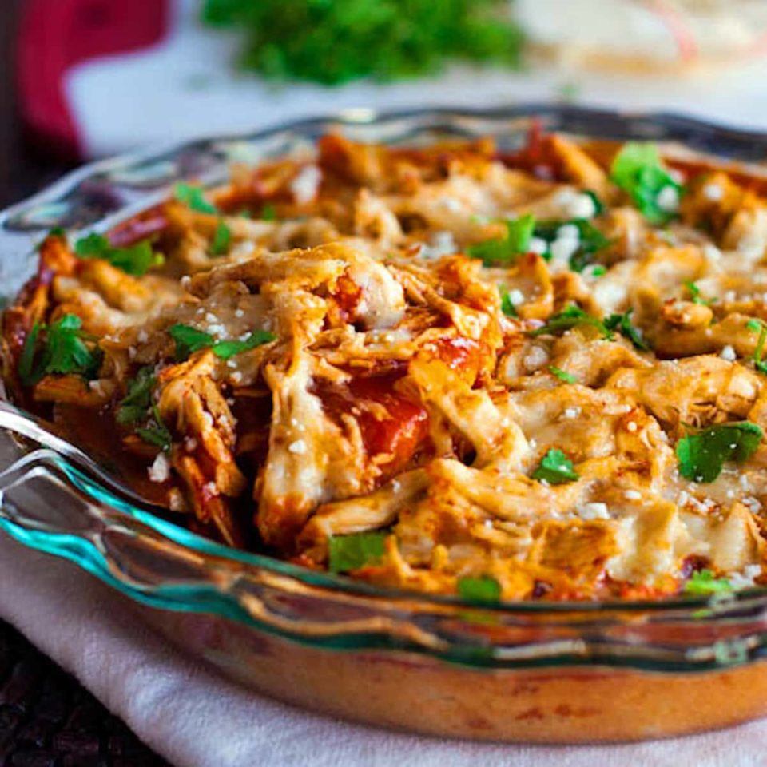

Chicken Tamale Pie Recipe
Description:
This chicken tamale pie is a huge crowd pleaser and so easy to make! A corn cake bottom layer topped with shredded chicken, enchilada sauce, and cheese.

Ingredients:
- 1/3 cup fat free milk
- 1/4 cup egg substitute
- 1 1/2 tablespoon taco seasoning, divided
- 1/4 teaspoon ground red pepper
- 1 (14 3/4 ounce) can cream-style corn
- 1 (8.5 ounce) box corn muffin mix (such as Jiffy)
- 1 (4 ounce) can chopped green chiles, drained
- 1 (10 ounce) can red enchilada sauce I recommend going with an authentic Mexican brand
- 2 cups shredded cooked chicken breast
- 3/4 cup shredded white cheese
- cilantro and crumbled Cotija cheese for topping
Steps:
- Preheat oven to 400°. Combine the first 7 ingredients (milk through green chiles), using just 1/2 tablespoon of the taco seasoning, in a large bowl, stirring just until moist. Pour mixture into a round pie plate (mine was glass) coated with cooking spray. Bake for 20-30 minutes.
- While corn is baking, toss the chicken in the remaining 1 tablespoon taco seasoning. When corn is done – it will be just barely set and golden brown – pierce entire surface liberally with a fork (it might stick a little bit to the fork). Pour enchilada sauce over top. Top with chicken; sprinkle with cheese. Bake at 400° for 15 minutes or until cheese melts. Remove from oven; let stand 5 minutes. Cut into 8 pieces; top each serving with cilantro and Cotija cheese.